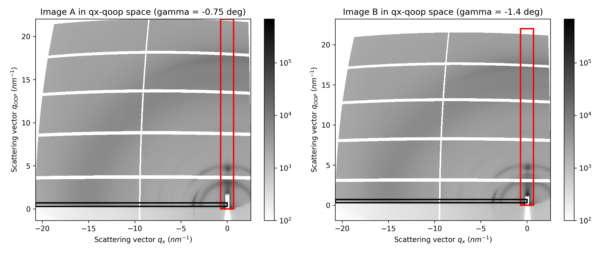
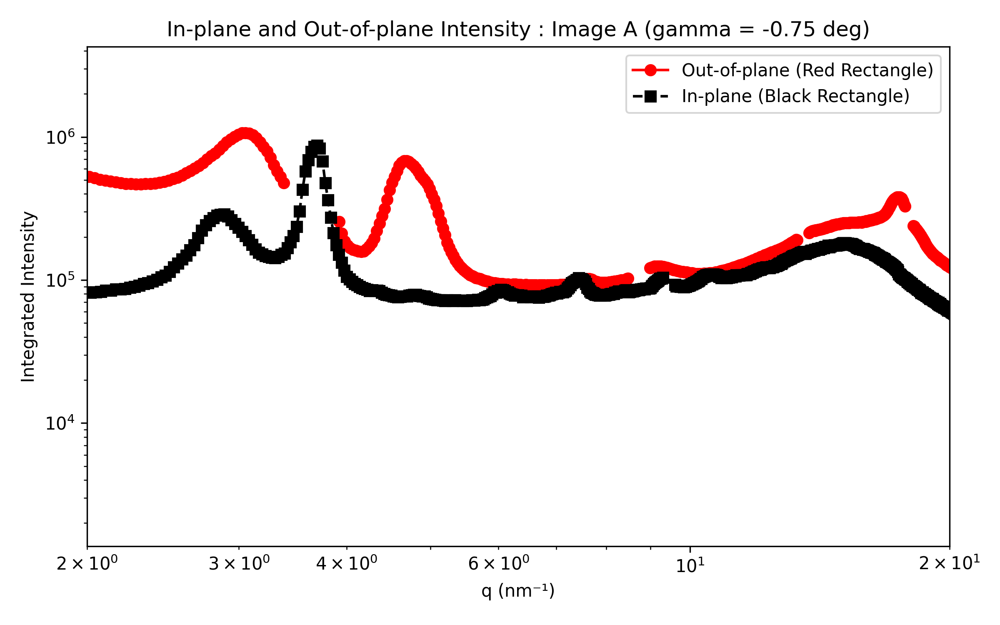
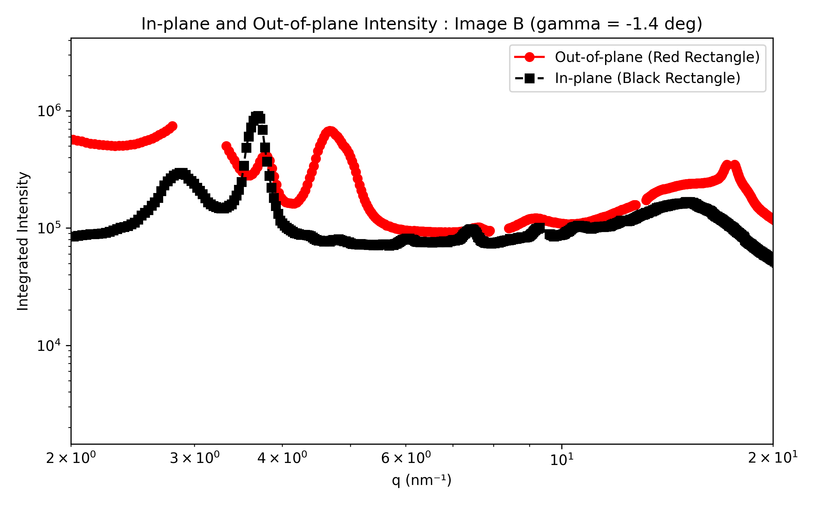
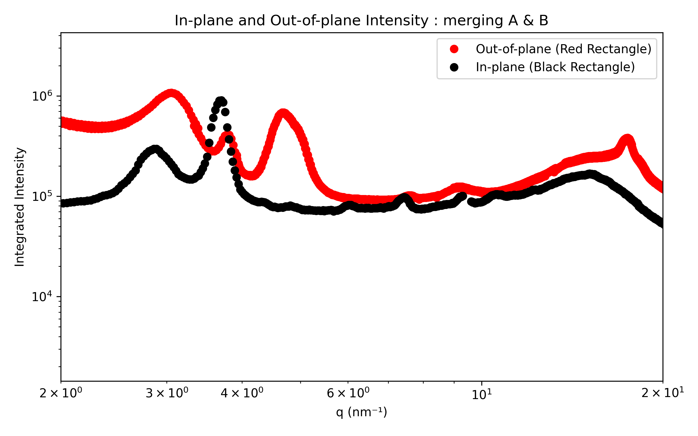

In-plane & out-of-plane integration#
Warning: out-of-plane integration is often not rigorous#
With a single angle of incidence, it is impossible to fully cover the range of \(q_z\) at \(q_{xy}=0\) due to the limitations of measuring the Ewald sphere with a planar 2D detector [18].
To rigorously obtain the out-of-plane region of reciprocal space at \(q_{xy}=0\), other techniques such as X-ray reflectivity should be used.
An approximation often made is to ignore the corrections required by the Ewald sphere, and integrate on \(q_x\) vs. \(q_z\) maps. In this case, note that comparisons between in-plane and out-of-plane integrations are mostly qualitative, particularly at high \(q_z\) values.
Definition of the integration area#
The in-plane integration will be performed within the black rectangle, while the out-of-plane integration will be performed within the red rectangle. Define the boundaries in the cell below and run it.
# Define the left and right boundaries for the in-plane integration
# -> Red rectangle
left_qx = -0.7 # Set your desired left boundary (in nm^-1)
right_qx = 0.7 # Set your desired right boundary (in nm^-1)
# Define the bottom and top boundaries for the out-of-plane integration
# -> Black rectangle
bottom_qoop = 0.3 # Bottom boundary (in nm^-1)
top_qoop = 0.7 # Top boundary (in nm^-1)
...

Performing the integration#
Once you are satisfied with the boundaries, adjust the limits of the final plot in the next cell and run it.
# Define the limits of the plot and run the cell
q_min = 2
q_max = 20
...
The in-plane and out-of-plane intensity profiles will be generated for each image individually. In the final plots, the two out-of-plane datasets will be combined to remove gaps caused by dead zones.
In your further analysis, you can choose whether to:
keep both datasets separate,
merge them, using the second image to fill the missing data.
  
Save parameters#
Finally, run the last cell to generate a text file with all the parameters saved.